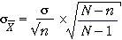

Sampling with replacement from finite populations
When selecting a random sample with replacement from a finite population, each successive value does not depend on earlier values, so the sample is an independent random sample. The formula that we gave earlier for the standard deviation of sample means is therefore still appropriate
 =
=  where
where
Note that the formula for the population standard deviation, σ, uses divisor N, the number of values in the population, rather than (N - 1). The distinction between these two divisors was mentioned when the standard deviation was initially defined.
Sampling without replacement from finite populations
The above formula does not hold when the sample values are dependent on each other in any way. We saw that when the sample values are positively correlated (i.e. they tend to be similar), the formula overstates the accuracy of the sample mean.
The opposite happens when a random sample is selected without replacement from a finite population. The successive values are again dependent — after a large value is selected, it cannot be selected again, so the next value will tend to be lower. The sample values are therefore negatively correlated.
Provided only a small fraction of the population is sampled (say under 5%), the dependence is slight and can usually be ignored. However if the sampling fraction is higher, the earlier formula should be corrected since it understates the accuracy of the sample mean. The correct formula is

The quantity (N - n) / (N - 1) is called the finite population correction factor.
The diagram below shows a population of 16 values.
Click Take sample to select a random sample of 2 of these values (without replacement). The sample mean is shown in the lower half of the diagram with a normal distribution whose standard deviation is calculated without the finite population correction factor.
Click Finite population correction to show the effect of the correction factor. Since only a small fraction of the population is sampled, there is little difference.
Turn off the correction factor, increase the sample size to 14, then take several samples. The jittered dot plot of the sample means shows a distribution with much lower spread than the normal distribution. After turning on the correction factor, the normal distribution matches the actual spread of the distribution of sample means.
Increase the population size to 48 and again observe that the correction factor has little effect when a small fraction of the population is sampled, but is important when the sampling fraction is high.